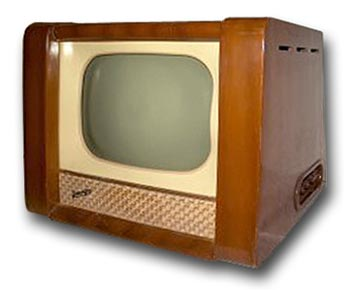
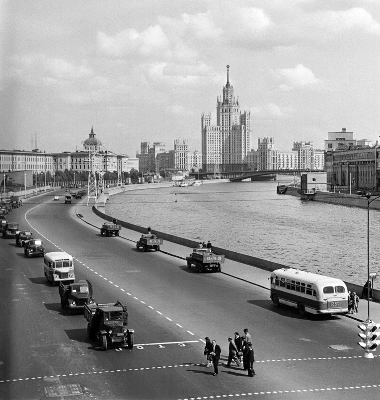
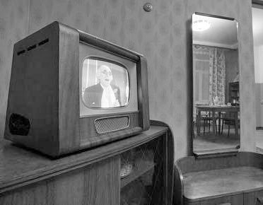
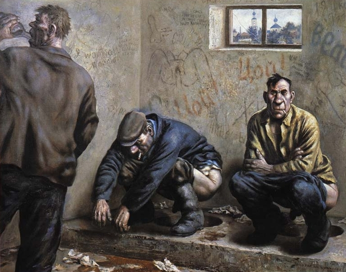

Радиоприёмник появился в нашей семье ещё до моего прозрения, где-то в 1952-53 годах.
Более всего мне нравилось крутить ручки и смотреть в глазок по центру приёмника.
Фантастические цвета и переливы регулятора создавали во мне образ таинственного мира за пределами Гусь-Хрустального, да ещё говорящего на непонятном мне языке и иногда звучащим неслыханной музыкой.
Телевизор появился в нашей комнате коммунальной квартиры (с соседями) в 1955-57 годах и его просмотр был тогда каким-то праздником жизни для всех взрослых. К нам приходили иногда и соседи. Это был символ движения СССР к вершинам братства и благосостояния. Возможно, в отдельные моменты, по праздникам какие-то группы и слои верили тогда и в КОММУНИЗМ.

Да и всё искусство и силовики к этому подталкивали население.Взрослые может и сомневались, а я точно знал в свои 7 лет, что Коммунизм, всё общее и отличное - будет.
В 1958 году вышел фильм Добровольцы.
Музыка, социальные действия и постоянные победы комсомольцев в этом фильме вызывали в моём восьмилетнем сознании сочувствие героям и глубоко засели в моей памяти. Тем более обстановка в уютной комнате главного героя фильма была похожа на нашу.
Единственно, там не показан так называ6емый санузел. У нас он был на улице и общий, а в фильме индивидуальный и дома. Это была Москва.
Если снова кто-то через 1000 лет вновь будет строить коммунистическое общество, то им в первую очередь надо начинать с общего туалета во всех населённых пунктах строителей коммунизма. И это заведение должно быть похоже на храм - с этого места должны начинаться все подвиги и победы будущих строителей коммунизма, сюда же они могли бы заходить и помыться после временных неудач, пьяных драк и бурных застолий.
Правители СССР после победы с союзниками во второй мировой войне над гражданами в основном из рабочих и крестьян Германии, Италии и их сателлитов разошлись во взглядах на планы дальнейшего жития-бытия с США, Великобританией, Францией и другими демократическими странами, разругались и вступили в холодную войну с намерениями всё-таки объединить пролетариев всех стран и уничтожить капитализм и его последнюю стадию либерализм и империализм.
Сталинское руководство добыло чережи атомной бомбы, немецких рает ФАУ и начали гонку вооружений, оставив бедное население с верой в яблоки на марсе.
Для этого была организована академия и собирались лучшие студенты выпускных курсов физико-математических специальностей для подготовки первых грамотных офицеров для ракетных войск.
Через 20 лет в этой академии и мне предстояло учиться и продолжить сопротивляться Западу с помощью баллистических ракет, но об этом я тогда и не подозревал. За меня всё решило политическое руководство. Мне это не нравилось и в зрелые годы я участвовал в реформах страны.

Москва, 1950-е годы. Слева военная академия, в центре, на Котельнической набережной, жилой дом для верных делу партии строителей коммунизма и борцов с империализмом.
И когда в 1961 году объявили о построении коммунизма к 1980 году, то радость переполняла всё моё детское воображение. Мне казалось, что там будет много ёлочных игрушек, которых у меня было недостаточно.

В 1961 году наша большая комната двухкомнатной хрущёвки с удобствами на улице выглядела примерно так: у окна по центру первой половины комнаты стоял круглый стол. Слева от окна с выходом на небольшой балкон второго этажа двух этажного дома стоял телевизор, справа - тумбочка с зеркалом, вторая половина была спальней родителей. Во второй комнате стоял радиоприёмник и спали дети.Примечание:
Общественные туалеты, на которые у строителей коммунизма не было времени выглядели по всему СССР до 1991 года почти так, как это изобразил Василий Шульженко.
И это было неотъемлемой частью всей двуличной общественной жизни советского человека.
В 1985 после возложения венков на могиле неизвестного солдата на кладбище в Гусь-Хрустальном, не более 200 км. от Москвы, мы зашли с отцом примерно в такое заведение на центральном колхозном рынке города. Тогда он с орденами участника войны и я в форме капитана РВСН посидели на дырках примерно такого туалета.

А что делать было тогда? Надо как-то выживать и думать о перестройке!!!
Страна заходила в тупик, но лучших гуманириев не собирали и академий для них никто не строи, а возникшие группы энтузиастов с задачей реформирования не спраились. Но об этом позже.
{kind=link}